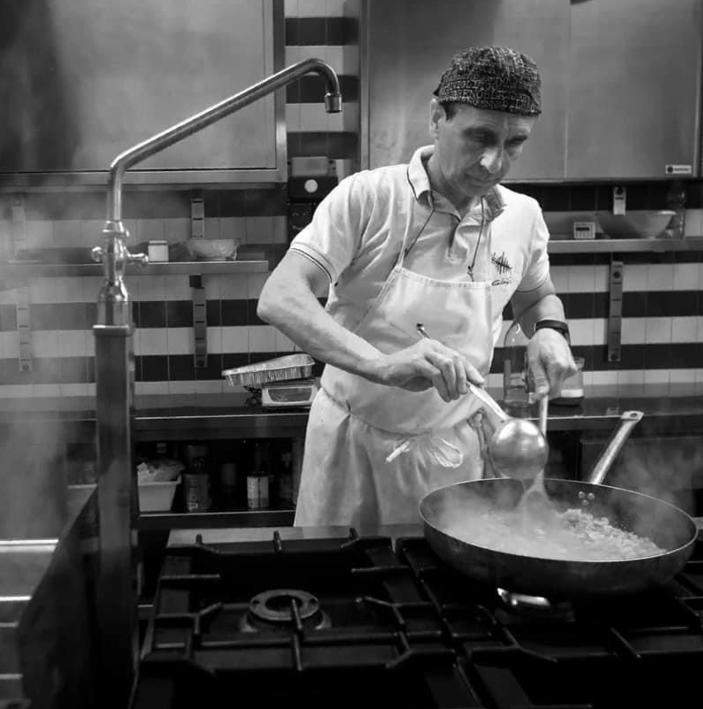
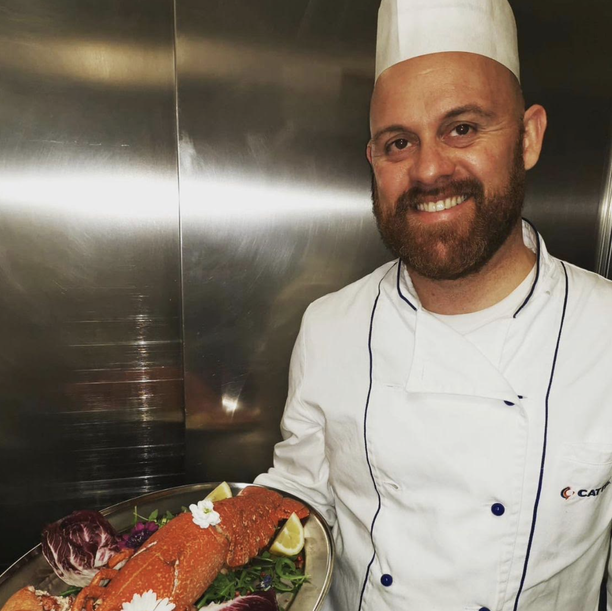
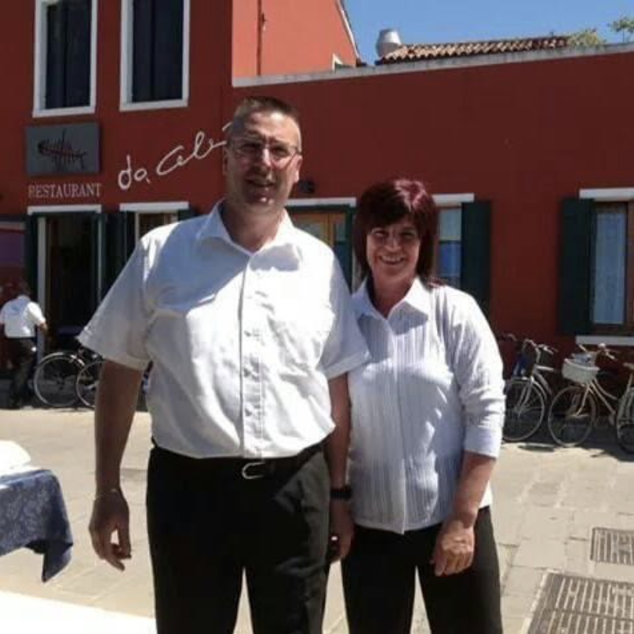
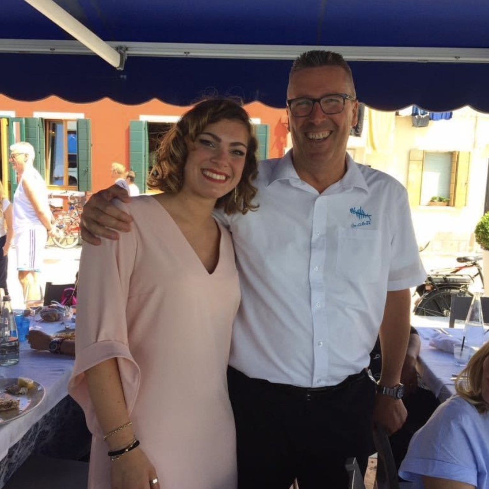

UncleZio Mirco is a hard working person, always behind the cookerforno and the hot flames, super focused in preparing the dishes at the best of his abilities. He always needs help so you coudl start with him.

If uncle Mirco puts a lot of pressure on you, stay with Marco for a while, he always has a joke ready to make you laugh but at the same time very datailed and professional at his joblavoro .
And then there's mum and dad. They love when you go to the restaurant to help them waitressingservire . Even if it's just taking two glasses away from a table, they're happyfelici .

Just be aware that dad is always ready to take picture with his clients. Pictures that then you will receive on whatsapp. And you will get tagged on on facebook, even if you're not in the picturefoto .

Click on "Final" if you want to continue meeting people and visiting Pellestrina.
Or click "Go back" if you want to relive some island experiences.